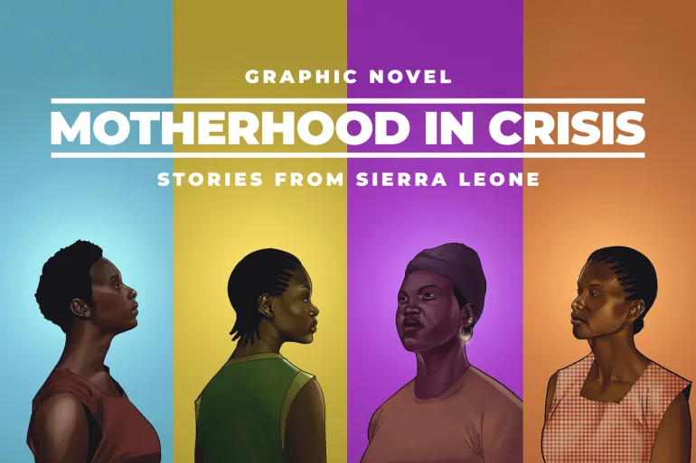

This graphic novel focuses on the experience of women in Sierra Leone, where pregnancy is not something safe or guaranteed, but something that can become life-threatening. Where giving birth becomes not only a personal experience, but also something influenced by larger social conditions. One thing that stands out is how the graphic novel format makes the issue feel more direct. Instead of just reading facts, we actually see the women, their emotions, and their situations. This makes the problem feel less distant. At the same time, it shows that these struggles are not isolated, but part of a bigger system where healthcare is not equally accessible. The fact that many women die during childbirth is not presented as something random, but as a result of the conditions. It raises the idea that something as basic as medical care is not guaranteed for everyone. Because of this, the graphic novel does not just tell individual stories, but also shows how larger structural problems affect personal lives.
Home